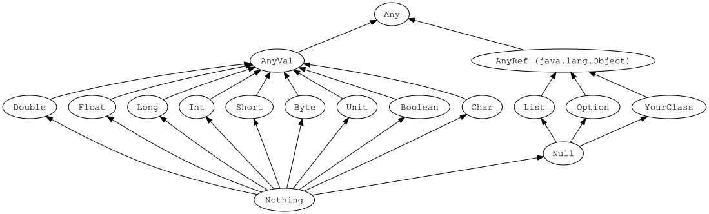

CM2 - Introduction à Scala
1 Introduction
1.1 Présentation
- Créateur : 2003 Martin Odersky (EPFL). A été impliqué dans le développement des types génériques en Java 5.
- SCA(lable) LA(nguage)
- on peut écrire des petits scripts jusqu’à des systèmes très larges avec des millions d’utilisateurs.-
- orienté objet
- fonctionnel
- typage statique
- compilable vers :
- JVM byte-code
- Scala peut appeler des bibliothèques Java,
- Java peut appeler des bibliothèques Scala.
- Javascript
- Code Natif avec LLVM
- JVM byte-code
- Killer apps : Spark (Big Data), Akka/Pekko (Actor model), Kafka (distributed pub/sub)
- Utilisé dans la finance, chez Netflix, Twitter, LinkedIn, …
- Permet d’écrire du code très puissant très rapidement. On lit du code 10x plus qu’on ne l’écrit. Un langage concis permet de garder plus de contexte en tête et de naviguer facilement dans des programmes volumineux. Typage fort : si ça compile, ça marche !
1.2 Références
Boris Cherny (Creator of Claude code)
- “The one technical book I would recommend to everyone that has had the greatest impact on me as an engineer is functional programming in Scala.”
Martin Odersky (Creator of Scala)
- Martin Odersky explique comment le code généré par IA nécéssite des systèmes de type plus puissants pour éviter les vulnérabilités.
2 Syntaxe de base
2.1 Hello World
// object = singleton, une seule instance possible
object HelloScala:
// Definition d'une méthode
def greet(person: String): String =
s"Hello, $person! Welcome to Scala."
// méthode @main: le programme commence ici
@main def hello(): Unit =
val firstName: String = "Scala" // variable immutable (final en Java)
val name = firstName + " Beginner" // le type est inféré
var count = 1 // variable mutable (modifiable)
println(greet(name)) // scala.Predef.println est importé par défaut
println(s"This is your $count attempt at Scala.")
count += 1
println(s"Now your attempt count is $count.")- Les ; sont optionnels.
- Scala 2 utilisait une syntaxe avec des {}
- Scala 3 supporte également la “braceless syntax” à la Python. C’est maintenant le style par défaut.
- Les types sont inférés (devinés par le compilateur). Il n’est généralement pas nécéssaire de les préciser, sauf pour les paramètres de fonctions. Pour les méthodes publiques, c’est une bonne pratique de préciser le type de retour.
2.2 val vs var
- utiliser
valpar défaut - en programmation fonctionnelle, tout doit être immutable
varest un “code smell”. Si vous l’utilisez, documentez pourquoi
Vous pouvez utiliser var pour écrire un algorithme optimisé. Si la variable mutable n’est pas visible de l’extérieur, la fonction reste une fonction “pure” du point de vue de l’appelant.
2.3 Classes
// width et height sont à la fois des paramètres du constructeur
// et des attributs privés immutables
class Rectangle(width: Float, height: Float):
val area: Float = width * height // membre public
// Les attributs sont immutables => on doit renvoyer un nouveau Rectangle
def scale(mult: Float): Rectangle =
new Rectangle(width * mult, height * mult)
val rect = Rectangle(10, 3) // new n'est pas obligatoire
println(rect.area)
println(rect.width) // erreur ! pas accessible
println(rect.scale(2))
println(rect.scale(mult = 2)) // les arguments peuvent être nommés2.4 Case Class
- Notre classe
Rectangleaurait besoin :- de méthodes accesseurs publiques (getters en Java)
- de
equals,hashCode,toString - d’un constructeur par copie
- d’implémenter
Serializable - … boilerplate !!
case classindique au compilateur qu’il doit générer tout cela.
case class Rectangle(width: Float, height: Float)
val rect = Rectangle(10, 3)
println(rect.width) // accesseur
rect == Rectangle(10,3) // true. En Scala, == appelle .equals
println(rect) // toString est appelé. Sortie: Rectangle(10.0,3.0)
val rect2 = rect.copy(width = 5, height = 2) // constructeur par copie2.5 Héritage
extendspour définir une relation d’héritage entre 2 classes
// paramètres déclarés avec val => accesseurs public
class Shape(val x: Int, val y: Int):
val isAtOrigin: Boolean = x == 0 && y == 0
class Rectangle(x: Int, y: Int,
val width: Int, val height: Int) extends Shape(x, y)
class Circle(x: Int, y: Int,
val radius: Int) extends Shape(x, y)- problème :
xetysont des attributs dans la classe mère ET dans la classe fille - il faudrait implémenter
equals,toString, …
2.6 Héritage - classe abstraite
- solution :
Shapedoit être abstraite - remarque : on ne peut pas hériter d’une
case class
abstract class Shape:
def x: Int
def y: Int
val isAtOrigin: Boolean = x == 0 && y == 0
case class Rectangle(x: Int, y: Int,
width: Int, height: Int) extends Shape
case class Circle(x: Int, y: Int, val radius: Int) extends Shape
val shape: Shape = Circle(1, 5, 10)2.7 Héritage - overriding
abstract class Shape:
def x: Int
def y: Int
// area is abstract (le mot-clé abstract est facultatif)
def area: Double
// s"...$myvar... " : String interpolation
def description: String = s"Shape at ($x, $y)"
case class Rectangle(x: Int, y: Int,
width: Int, val height: Int) extends Shape:
// val ou def fonctionnent. area est abstract => override est facultatif
val area: Double = width * height
// le mot-clé "override" est obligatoire
override def description: String =
super.description + s" - Rectangle $width * $height"
val rect = Rectangle(x = 0, y = 3, width = 3, height = 2)
rect.description
rect.areavalpour garder le calcul (plus de mémoire, moins de CPU)defpour le refaire à chaque fois (moins de mémoire, plus de CPU)
2.8 Trait
- En Scala, les interfaces sont des
trait - ils peuvent contenir des implémentations
extendspour le premier trait ou classe étenduewithpour les suivants- une classe ou trait qui implémente plusieurs traits est un mixin
trait Description:
def description: String
trait Coordinates extends Description:
def x: Int
def y: Int
def description: String = s"Coordinates ($x, $y)"
trait Area:
def area: Double
case class Rectangle(x: Int, y: Int, width: Int, height: Int)
extends Coordinates with Description with Area:
def area: Double = width * height
override def description: String =
super.description + s" - Rectangle $width * $height"2.9 Traits - conflits
Si plusieurs traits redéfinissent la même méthode, le trait le plus à droite a la priorité. Scala implémente un algorithme appelé linéarisation
trait A:
def methode = "a"
trait B:
def methode = "b"
trait C:
def methode = "c"
class ABC extends A with B with C:
override def methode = super.methode
def methodeA = super[A].methode
class CAB extends C with A with B:
override def methode = super.methode
ABC().methode // c
ABC().methodeA // a
CAB().methode // b2.10 Companion object
- Toute classe peut avoir un objet “compagnon”.
- il va typiquement contenir des méthodes qui seraient statiques en Java :
- constructeurs alternatifs
- calculs qui ne dépendent pas des attributs
- traitements sur des collections de la classe
import java.time.LocalDate
case class Person(name: String, dob: LocalDate)
object Person:
// Les constructeurs ont le nom réservé apply
def apply(nom: String, age: Int): Person = ???
def computeAge(today: LocalDate, dob: LocalDate): Int = ???
def averageAge(personnes: Array[Person]): Float = ???
val p = Person("John", 25)??? est utile lorsqu’on veut coder une signature de fonction, mais que l’on souhaite implémenter plus tard.
def ??? : Nothing = throw new NotImplementedError2.11 Instructions conditionelles : if/else
if (condition) exprTrue else exprFalse- c’est une expression, et a son propre type
def agePeriod(age: Int): String =
if (age >= 18)
"adult"
else
"child"Pas besoin de return, le if renvoie une String.
2.12 Instructions conditionelles : pattern matching
Utilisation basique : remplace switch/case
def daysInMonthByNumber(monthNumber: Int, isLeapYear: Boolean = false): Int =
monthNumber match
case 1 | 3 | 5 | 7 | 8 | 10 | 12 => 31
case 4 | 6 | 9 | 11 => 30
case 2 => if isLeapYear then 29 else 28
// _ signifie "n'importe quelle valeur"
case _ => throw IllegalArgumentException(s"Invalid month: $monthNumber")2.13 Instructions conditionelles : pattern matching
- Utilisation avancée : déstructure les types
sealedpermet de garantir que toutes les implémentations du trait sont définiesShapeest un “Union Type” (OU).Rectangleest un “Product Type” (ET).
sealed trait Shape
case class Square(side: Double) extends Shape
case class Rectangle(width: Double, height: Double) extends Shape
case class Circle(radius: Double) extends Shape
def calculateArea(shape: Shape): Double = shape match
case Square(side) => side * side
case Rectangle(width, height) => width * height
// avec affectation de variable
case c @ Circle(_) => math.Pi * c.radius * c.radius
// case _ => // pas nécéssaire, pas d'autres Shape possible2.14 Hiérarchie des types Scala

- Vos propres classes héritent de
AnyRef, qui hérite dejava.lang.Object. Ces objets sont passés par référence (adresse) en argument de méthodes. Anyest la super-classe de toutes les classesAnyValest la super-classe des valeurs. Les objets ayant ce type sont copiés lorsqu’ils sont passés en argument.- Il n’y a pas de types primitifs comme en Java. Tout est objet.
nullexiste mais n’est jamais utilisé, sauf pour utiliser des bibliothèques Java.Nothingest le bottom type. Aucune valeur ne peut avoir ce type. Il peut être utilisé comme type de retour pour des fonctions non implémentées.